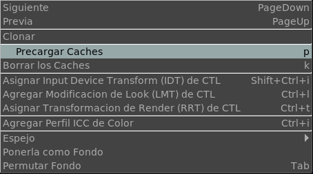

El Menu de la Imagen

El menu de la imagen te permite ir al Proximo o al Anterior archivo en la Lista de Carretes o LDE.
La opción de Clonar permite clonar el cuadro para luego compararlo con algo mas. Su utilidad es ideal para comparar renders hechos con diferente iluminación.
Precargar caches carga las secuencia de imágenes en el fondo. Notese que esto puede hacer que la interfaz no responda rápidamente.
Borrar caches borra todos los caches de secuencia y de video para ahorrar memoria.
El Asignar CTL Input Device Transform te permite cargar un CTL IDT script y applicarlo en la vista actual. The CTL Input Device Transforms son usualmente creadas por los manufacturadores de film para cada cámera y a veces para distintos settings de la misma cámera. Usted puede tener un solo CTL IDT script por lut.
El Agregar CTL Look Mod Transform te permite aplicar un look mod transform que es normalmente usado para modificar la imagen (por example, una pasada de bleach), sin verdaderamente modificar los pixeles originales de la imagen.
El Asignar una CTL Rendering Transform aplica una transformación de render para llevar los pixels de un espacio de trabajo de ACES al final definitivo de OCES workspace. Esta transformación es usualmente la standard Reference Rendering Transform (RRT.a1.0.0 currently) y no requiere cambio.
El Asignar Perfil de Color ICC permite atar un perfil de color a la imagen. Este perfil debería terminar en un espacio de color XYZ. Es usado si no CTL script es usada. La practica de usar ICC profiles esta ahora obsoleta.
La opción de Espejo permite espejar la imagen en X o en Y.
La opción Ponerla como Fondo pondrá la imagen de frente actual como imagen de fondo para luego componerla o usarla en un wipe.
Permuta Fondo permite activar y desactivar la composición de la imagen de frente sobre la imagen de fondo. Para que la composición funcione, la imagen de fond debe tener un alpha channel.